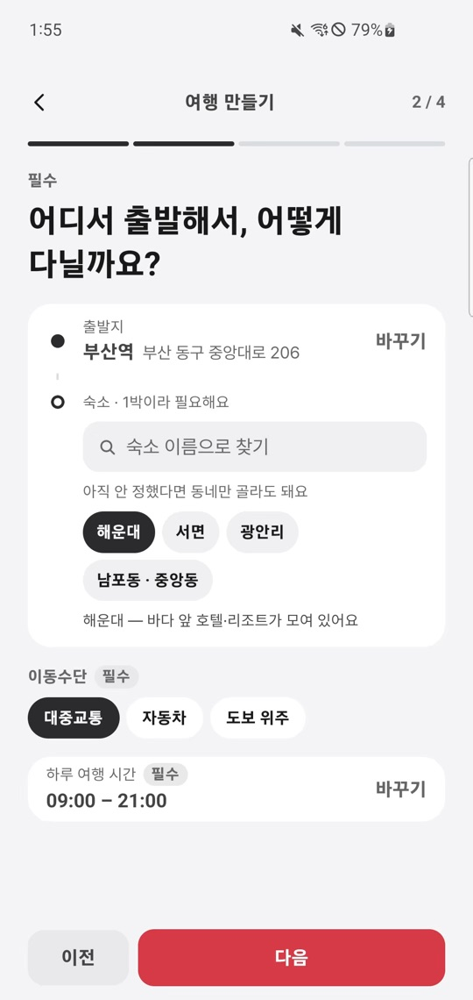
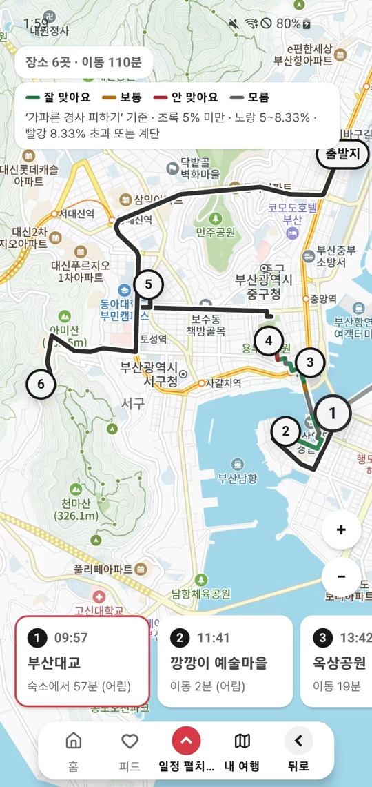
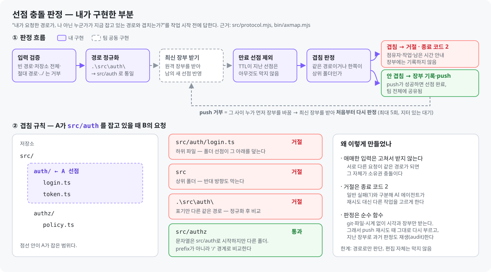
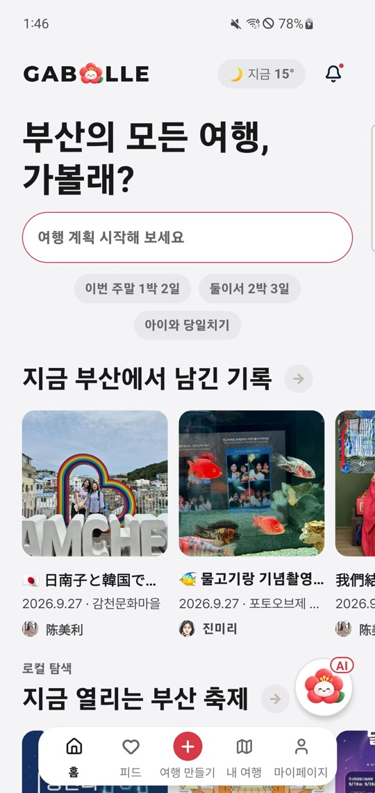
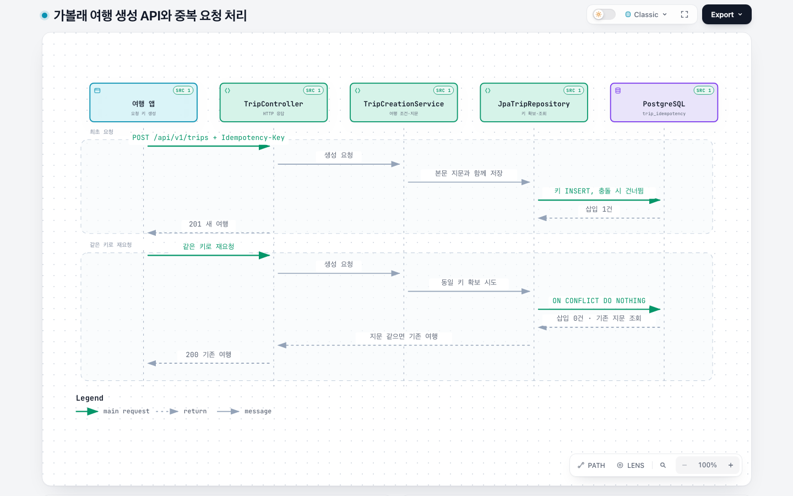

01 / 여행 계획 서비스
가볼래 GABOLLE
외국인 여행객이 취향과 이동 조건에 맞춰 부산 여행 일정을 만드는 서비스입니다. 저는 여행·일정 API를 맡아, 재요청으로 여행이 중복 생성되거나 동행자의 수정이 서로 덮이거나 이벤트 기록이 사라지는 문제를 DB 단에서 막았습니다.
- 제 담당
- 여행·일정 API, PostgreSQL 저장·검증, 이벤트 저장 경로 수정
- 사용 기술
- Java 17 · Spring Boot · JPA · PostgreSQL · Flyway
- 재요청해도 여행은 하나만Idempotency-Key를 DB에 먼저 등록한 요청만 여행을 만들고, 같은 요청에는 기존 결과를 돌려줍니다.
- 동시 수정해도 변경이 사라지지 않게읽은 버전과 DB 버전이 같을 때만 수정하고, 충돌하면 409로 최신 일정을 다시 받게 했습니다.
- 재시작해도 남는 이벤트 기록메모리에 쌓이던 사용자 이벤트를 PostgreSQL Outbox 테이블에 저장하도록 바꿨습니다.
- 팀원들의 AI가 같은 파일을 고치지 않게고치기 전에 파일을 먼저 예약하는 팀 도구 axMap을 함께 만들었습니다. 저는 예약이 서로 겹치는지 판단하는 규칙을 설계하고 검증했습니다. 자세히 보기


앱 화면은 팀 결과물이며, 저는 여행·일정 API를 맡았습니다.
대표 사례 · 증상에서 원인까지
여행 만들기를 다시 누르면 여행이 두 개 생겼습니다
- 무슨 일이
휴대폰이 서버 응답을 못 받으면 사용자는 같은 요청을 한 번 더 보냅니다. 처음 코드는 “이 요청 키가 이미 있나?”를 조회해 보고, 없으면 여행을 저장했습니다.
- 왜 그랬나
같은 키의 요청 두 개를 동시에 보내 보니, 둘 다 “아직 없네”라고 보고 여행을 하나씩 만들었습니다. 조회하고 저장하는 사이의 짧은 틈이 문제였습니다.
- 고민한 점
서버 안에서 락을 걸면 서버가 여러 대일 때는 소용이 없습니다. 그래서 모든 서버가 같이 쓰는 DB에 판단을 맡기기로 했습니다.
- 바꾼 방법
요청 키를 먼저 DB에 넣어 보고, 들어간 요청만 여행을 만듭니다. 이미 있는 키라면 같은 내용일 때 기존 결과(200)를, 다른 내용일 때 409를 돌려줍니다. 동시 요청 8건을 보내도 여행이 1건만 생기는지 테스트로 확인합니다.
- 한 번 더 막힌 곳
같은 방식을 일정 충돌에도 쓰면서 SAVEPOINT로 예외를 복구했는데, 메모리 테스트는 통과하고 실제 PostgreSQL 테스트에서만 실패했습니다. 예외를 복구하는 대신
ON CONFLICT DO NOTHING으로 저장된 행이 0개인지 보고 충돌을 판단하게 바꿨습니다. - 아직 남은 일
동시 요청 테스트는 아직 메모리 저장소에서만 돌립니다. 실제 PostgreSQL에서 동시 요청을 다시 확인하는 것이 다음 할 일입니다.
그 밖의 문제 해결펼쳐 보기
동행자 두 명이 동시에 고치면 앞사람의 변경이 지워졌습니다
두 사람이 같은 일정을 보고 고치면, 나중에 저장한 사람이 앞사람의 변경을 덮어씁니다. 그래서 요청에 “내가 본 버전”을 함께 보내고, DB의 최신 버전과 같을 때만 수정되게 했습니다. 버전이 다르면 409를 돌려줘 최신 일정을 다시 받게 합니다. 동시 수정 8건을 보내면 1건만 성공하고 7건은 거절되는지 테스트로 확인했습니다.
성공 응답을 받았는데 이벤트 기록이 사라졌습니다
API는 “저장했다”고 응답하는데, 서버를 껐다 켜면 사용자 행동 기록이 전부 사라졌습니다. 따라가 보니 실제 DB가 아니라 메모리 저장소에 쌓이고 있었습니다. 기록이 PostgreSQL Outbox 테이블로 들어가도록 저장 경로를 이었습니다. Outbox 구조는 팀이 함께 설계했고, 저는 이벤트를 받아 저장하는 경로를 맡았습니다.
axMap · 팀원들의 AI가 같은 파일을 고치지 않게 하는 도구펼쳐 보기
한 줄로 말하면, 파일 예약 장부입니다. 회의실을 쓰기 전에 예약하듯, AI 코딩 도구가 파일을 고치기 전에 “이 파일은 제가 쓸게요”라고 장부에 먼저 적습니다. 다른 사람이 이미 예약한 파일이면 시작 전에 막고, 누가 언제까지 쓰는지 알려 줍니다. 저는 이 중에서 “지금 예약하려는 파일이 남의 예약과 겹치는가”를 판단하는 규칙을 설계하고, 만들어진 코드가 규칙대로 동작하는지 검증했습니다.
왜 만들었나
가볼래 팀은 여섯 명이 각자 AI 코딩 도구를 띄워 개발했습니다. 그러다 보니 누가 어떤 파일을 고치는지 서로 보이지 않았고, 같은 파일을 동시에 고친 사실은 코드를 합칠 때가 돼서야 알게 됐습니다. 그래서 팀 회의에서 “고치기 전에 먼저 예약하자”는 규칙을 정했고, 이 규칙을 사람이 아니라 도구가 지키게 만든 것이 axMap입니다.
어디까지를 ‘겹친다’고 볼까
같은 파일이거나, 한쪽이 다른 쪽을 품은 폴더라면 겹친다고 봤습니다. A가 src/auth 폴더를 예약했다면 그 안의 src/auth/login.ts는 막힙니다. 그런데 이름만 비슷한 src/authz는 전혀 다른 폴더라 통과해야 합니다. 글자 앞부분만 비교하면 이것까지 막히기 때문에, 경로를 / 단위로 잘라 폴더 이름끼리 비교하도록 정했습니다. ./src/auth/처럼 적는 방식만 다른 경로는 같은 경로로 맞추고, 저장소 밖을 가리키는 경로는 받지 않습니다.
막을 때는 이유까지 알려 줍니다
“실패”라고만 하면 AI는 같은 요청을 계속 다시 보냅니다. 그래서 누가, 무슨 작업으로, 몇 분 더 쓰는지를 함께 보여 주고, 일반 오류(1)와 구분되는 종료 코드 2를 돌려줘 AI가 다른 작업으로 넘어가게 했습니다. 판단 로직은 입력만 보고 결과를 내도록 따로 떼어 두자고 제안했는데, 덕분에 두 사람이 거의 동시에 예약했을 때 최신 장부로 다시 판단하는 데도 그대로 쓸 수 있었습니다. 동시 예약 처리와 장부 동기화는 팀원들과 함께 설계했습니다.
얼마나 쓰였고, 무엇을 못 하나
가볼래 개발 기간(2026.08.25 ~ 09.30)에 예약 3,662회, 반납 2,240회가 장부에 쌓였습니다. npm에도 공개해 누적 다운로드 23,794회를 기록했습니다(npm 공식 통계 기준). 다만 예약을 무시하고 파일을 고치는 것까지 막지는 못하고, 서로 다른 파일에 같은 기능을 만드는 중복도 잡지 못합니다.
커밋 작성자가 한 명인 이유
AI로 도구를 만드는 데 토큰 비용이 많이 들어, 팀 회의에서 한 사람의 개인 계정(Claude Max 구독)으로만 코드를 생성하기로 정했습니다. 나머지 팀원은 구조와 기능별 구현 방식을 회의로 함께 정하고, 결과를 검토하는 방식으로 참여했습니다. 그래서 공개 저장소에는 커밋 작성자가 팀원 한 명으로 나옵니다.


앱 시연 36초 · 처리 흐름도펼쳐 보기


홈에서 여행 조건을 설정하고 지도에서 경로를 확인하는 실제 앱 시연입니다.
- 00:00 · 홈 화면
- 00:06 · 날짜·인원 입력
- 00:16 · 여행 취향 선택
- 00:24 · 지도에서 경로 확인